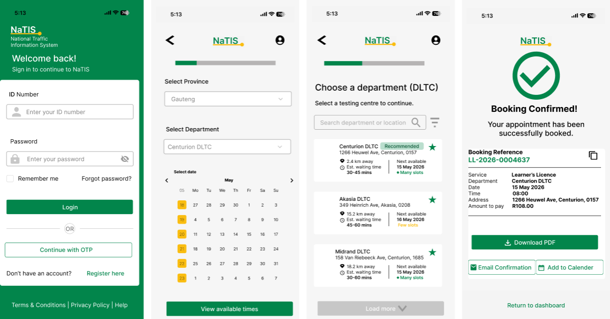
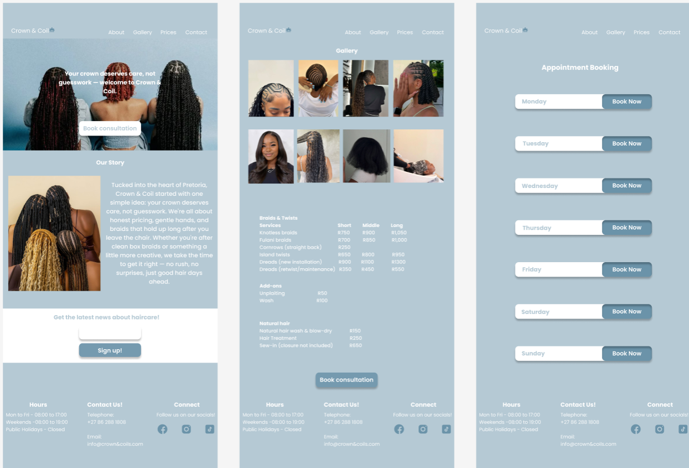
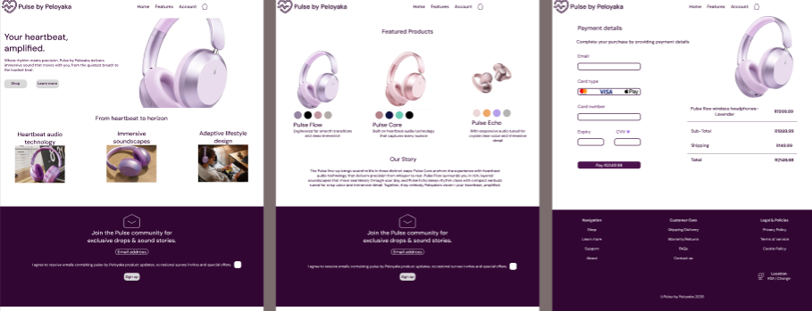

UX/UI designer with a background in Information Technology — I bring a systems-first way of thinking to every interface, grounded in real research rather than guesswork.
I'm a UX/UI designer who didn't start in design — I started in Information Technology. Studying web programming, database development, object-oriented programming, and computer architecture taught me to think in systems before I ever opened Figma.
Now I use that same structured thinking to design interfaces that aren't just beautiful, but grounded in how the underlying product actually functions. I care about design decisions that trace back to a real problem — not just visual preference.
My process leans on research first: understanding real user complaints and constraints before touching a wireframe. It's a habit from years of working with systems that had to actually work, not just look good in a mockup.

Redesigning the online booking flow for learner's license tests — tackling scarce slots, unfair refresh-races, and the travel-vs-availability trade-off.
View case study
A concept website for a Soweto-based braiding salon, designed to fix real pricing and booking transparency issues found in local salon reviews.
View case study
A premium headphone brand's e-commerce experience, positioned between Beats and Bang & Olufsen — built for trust, style, and a frictionless checkout.
View case studyI'm currently looking for UX/UI internship opportunities where I can grow, contribute, and learn from real teams. If you think I'd be a good fit, I'd love to hear from you.